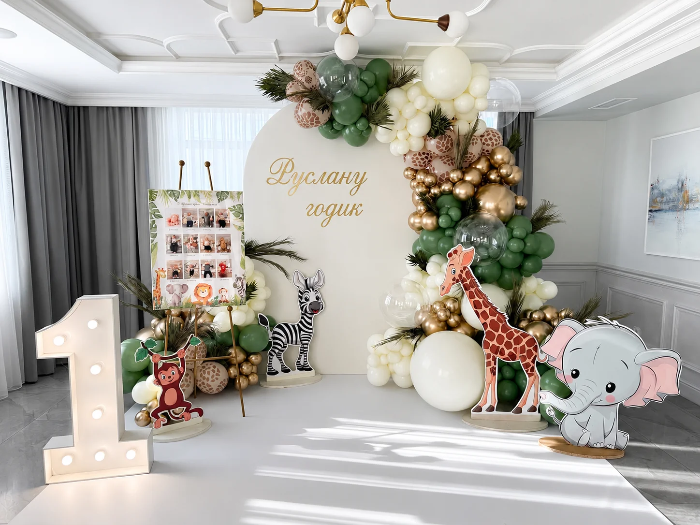
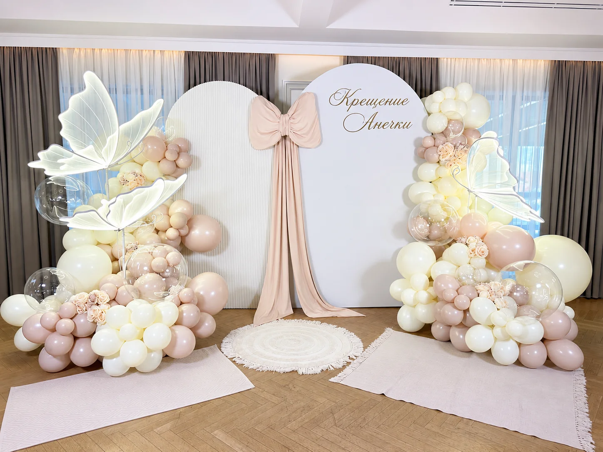
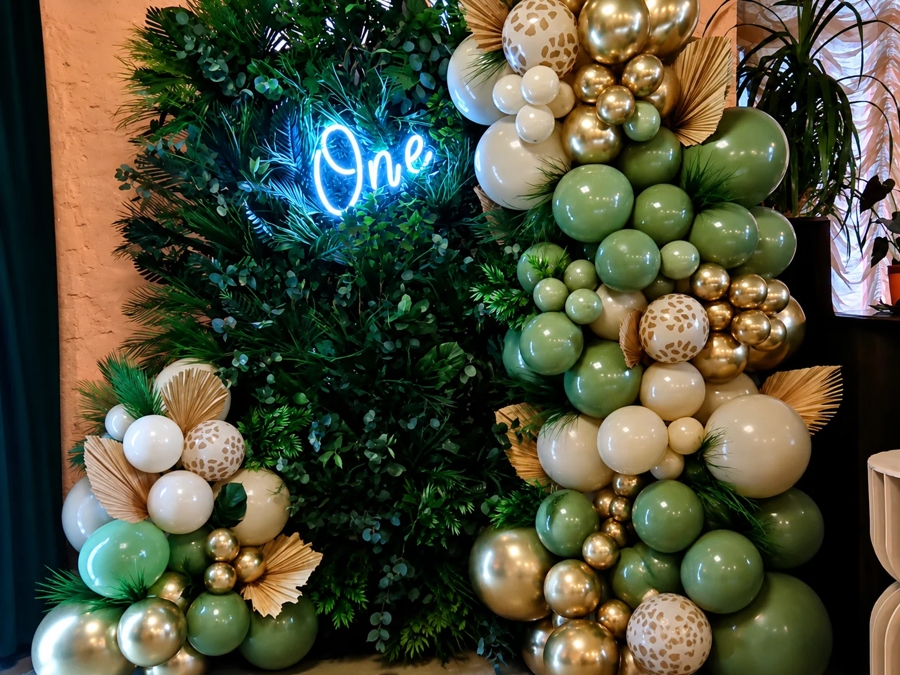
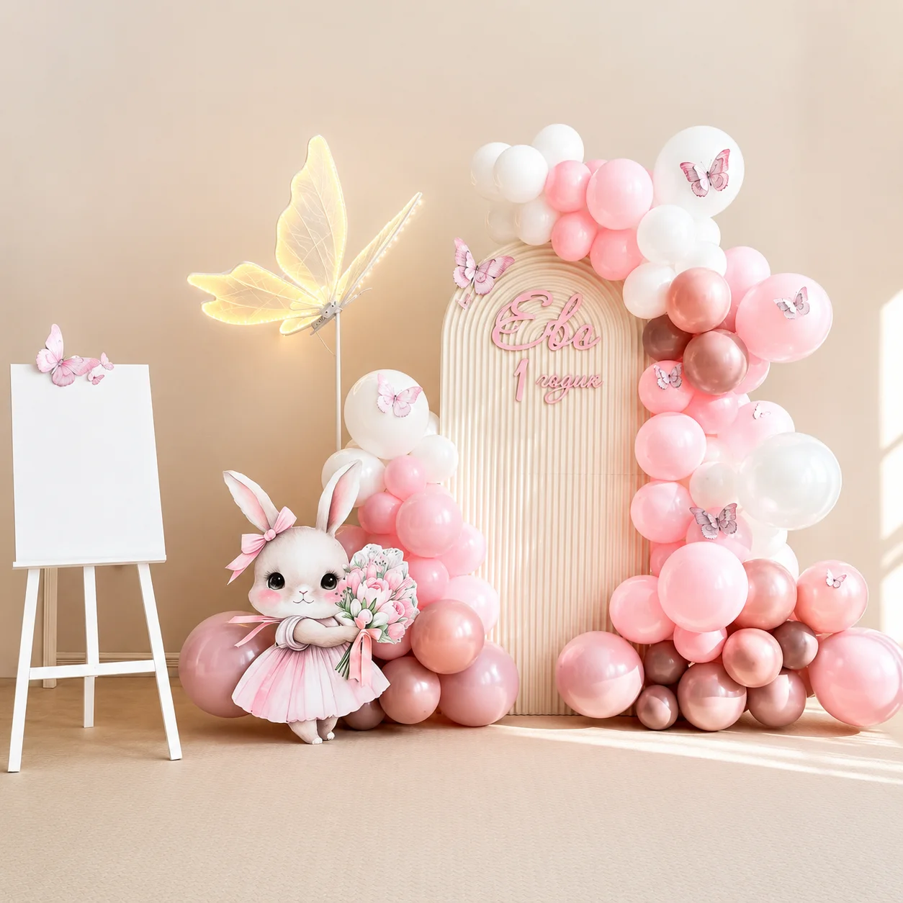
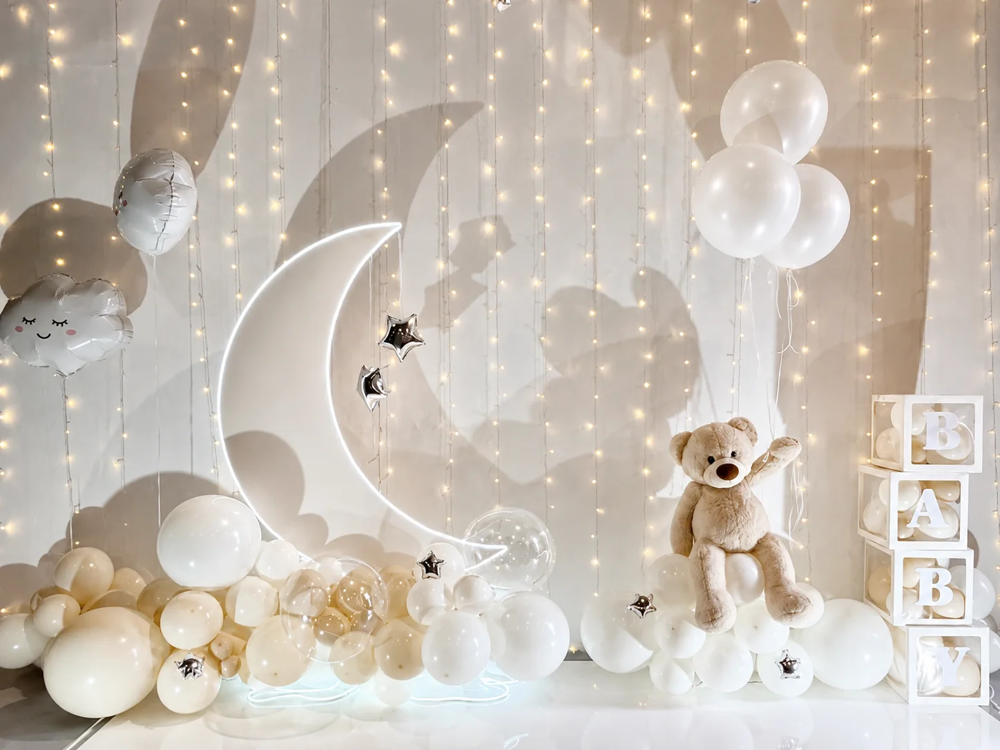
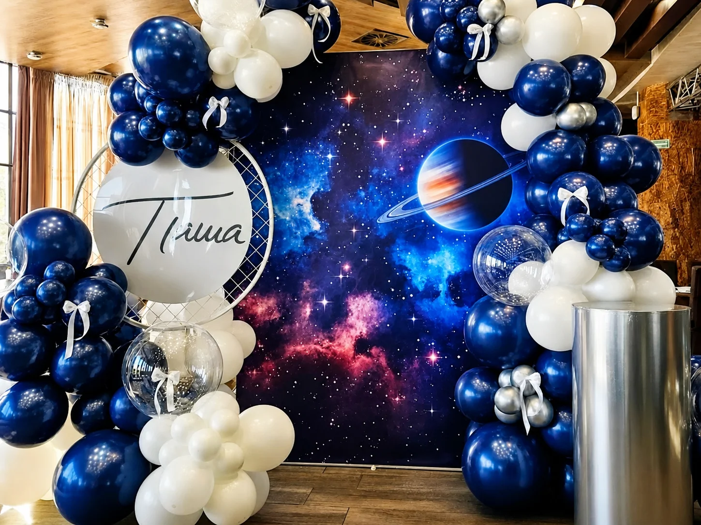

Детская фотозона под возраст и тему праздника
Детская фотозона должна быть красивой в кадре, устойчивой, понятной по теме и удобной для маленьких гостей. В отличие от взрослого декора здесь особенно важны высота элементов, свободное место перед фоном, надежная фиксация конструкций, мягкая цветовая палитра и отсутствие лишних деталей, которые мешают детям двигаться. Мы продумываем композицию так, чтобы рядом можно было сфотографировать ребенка одного, семью, гостей, торт, подарки и момент задувания свечей.
Для первого дня рождения часто выбирают нежные оттенки, декоративную цифру, облака, мишек, бабочек, воздушные шары, пастельные панели и аккуратную надпись с именем. Для детей постарше можно сделать космос, спорт, принцесс, динозавров, супергероев, мультяшную тему или стильную party-зону без перегруза. Мы адаптируем идею под ресторан, квартиру, детский центр, фотостудию или загородную площадку.
В работу входит обсуждение идеи, подбор цвета, расчет размера, подготовка шаров и декора, доставка, монтаж до прихода гостей и демонтаж после праздника. Дополнительно можно добавить аренду цифр, декор candy bar, оформление входа, столик для торта, фотозону с именем ребенка, тематические стойки, свет и цветочные элементы. Перед расчетом просим прислать дату, адрес, возраст ребенка, примерную палитру, фото площадки и пожелания по бюджету.
Компактная
от 750 Br
Фон, шары, надпись или цифра для квартиры, студии или небольшого детского зала.
Тематическая
от 1 600 Br
Индивидуальная тема, несколько уровней декора, печатные элементы и фотогеничная композиция.
Праздник под ключ
от 2 800 Br
Фотозона, candy bar, входная зона, цифры, свет и оформление дополнительных точек.
Этапы и сроки
Как проходит подготовка
Уточняем дату, возраст ребенка, место, тему, палитру, размер зоны и желаемый бюджет.
Предлагаем состав фотозоны, подбираем материалы и согласуем визуальное направление.
Готовим шары, печать, стойки, цифры, декор и проверяем комплект перед выездом.
Приезжаем заранее, устанавливаем конструкцию и оставляем чистую зону для первых фото.
Когда лучше заказывать
Оптимальный срок для детской фотозоны - за 2-4 недели до праздника. Этого достаточно, чтобы спокойно выбрать тему, подготовить печатные элементы, подобрать нужные оттенки шаров и согласовать монтаж с площадкой. Простые решения из доступных материалов иногда можно собрать быстрее, если дата свободна, но для тематического оформления с индивидуальными деталями лучше не откладывать.
Монтаж обычно занимает от 1,5 до 4 часов в зависимости от размера композиции и условий площадки. Если праздник проходит в ресторане или детском центре, мы заранее уточняем время доступа, место разгрузки, высоту потолков и правила крепления. Для домашнего праздника предлагаем компактные конструкции, которые не требуют сложного монтажа и аккуратно смотрятся в комнате.
Примеры детских фотозон







FAQ
Можно ли сделать фотозону для первого дня рождения?
Да. Для годика чаще всего добавляем цифру, имя ребенка, мягкую палитру, шары, безопасные стойки и место для семейных фотографий.
Вы оформляете детские праздники дома?
Да. Для квартиры или дома подбираем компактный формат без сложного крепежа, заранее уточняем размеры стены и свободное место перед фотозоной.
Можно сделать конкретную тему?
Да. Мы можем взять за основу космос, бабочек, любимый цвет, сказочную тему, спорт, мультфильм или более спокойный современный стиль.
Нужна ли отдельная аренда цифр?
Цифры можно добавить в смету сразу вместе с фотозоной. Это удобно для дней рождения, юбилеев и детских праздников, где возраст должен быть заметен в кадре.